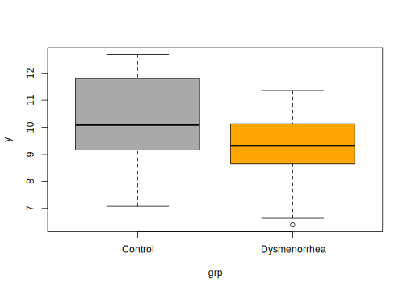
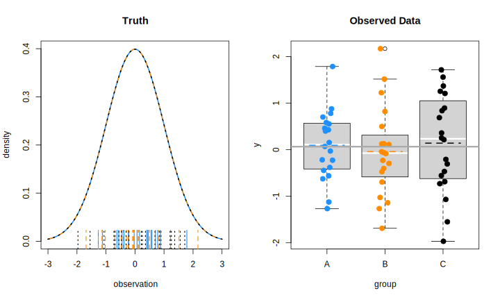
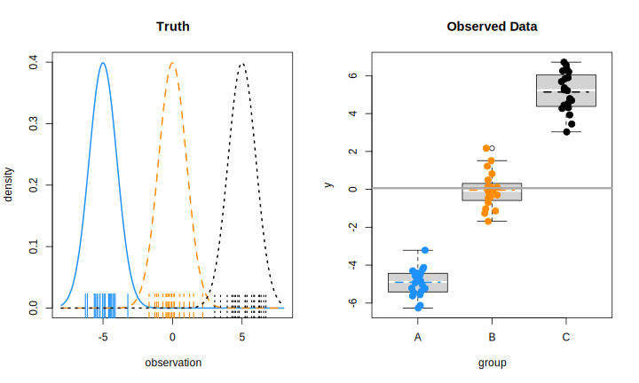
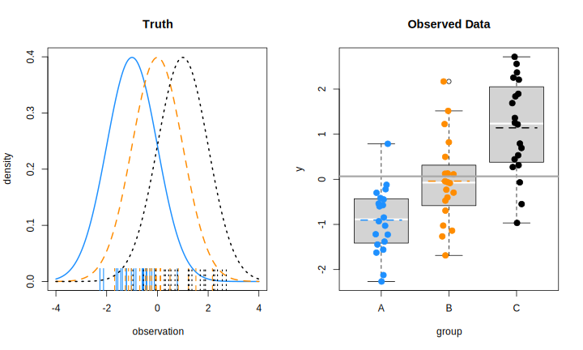
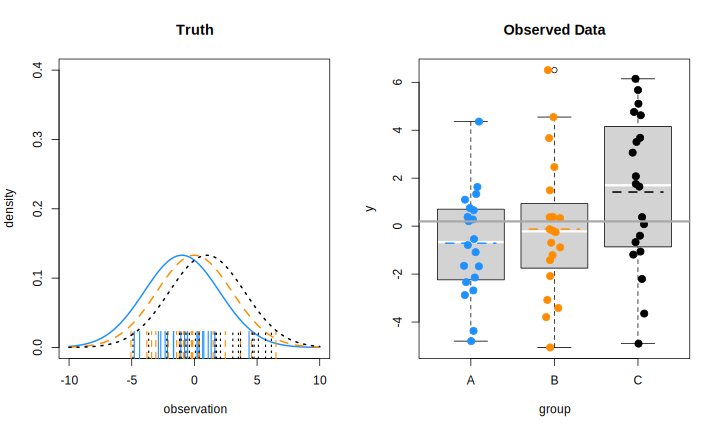
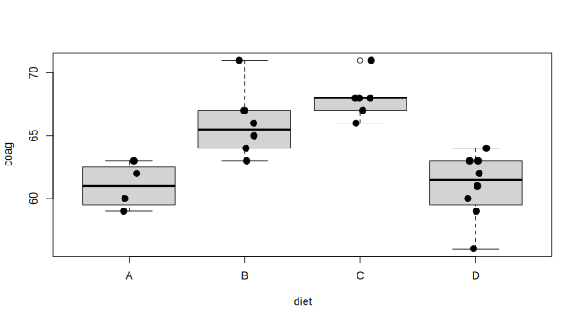
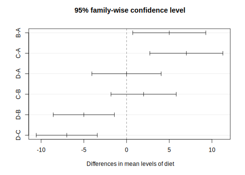

4.2 연속형 변수의 비교
기초 통계학 또는 타 과목에서 학습한 독립 이표본 \(t\) 검정이나 일원배치분산분석은 모두 선형모형의 특별한 케이스임. 두 방법 모두 연속형 변수를 반응변수로 놓고 범주형 변수를 예측변수로 설정한 회귀모형으로 간주할 수 있음.
- 독립 이표본 \(t\) 검정
\[ y_i = \beta_0 + \beta_1 x_i + \epsilon_i, ~~ \epsilon_i \sim \mathcal{N}(0, \sigma^2), ~~ x_i = \{0, 1\} \]
- 일원배치분산분석(수준 \(k = 3\), 각 수준 별 반복 \(n = 2\))
\[ \mathbf{y}_{6 \times 1} = \mathbf{X}_{6\times 4}\boldsymbol{\mathbf{\beta}}_{4\times 1} + \boldsymbol{\mathbf{\epsilon}}_{6\times 1} \]
\[\mathbf{y}_{6 \times 1} = \begin{bmatrix} y_{11} \\ y_{21} \\ y_{31} \\ y_{41} \\ y_{51} \\ y_{61} \end{bmatrix}, ~~ \mathbf{X}_{6\times 4} = \begin{bmatrix} 1 & 1 & 0 & 0 \\ 1 & 1 & 0 & 0 \\ 1 & 0 & 1 & 0 \\ 1 & 0 & 1 & 0 \\ 1 & 0 & 0 & 1 \\ 1 & 0 & 0 & 1 \end{bmatrix}, ~~ \boldsymbol{\mathbf{\beta}}_{4\times 1} = \begin{bmatrix} \beta_0 \\ \beta_1 \\ \beta_2 \\ \beta_3 \\ \end{bmatrix}, ~~ \boldsymbol{\mathbf{\epsilon}}_{6\times 1} \begin{bmatrix} \epsilon_{11} \\ \epsilon_{21} \\ \epsilon_{31} \\ \epsilon_{41} \\ \epsilon_{51} \\ \epsilon_{61} \end{bmatrix} \]
일반적으로 우리가 분석을 위한 데이터는 두 가지 방법을 통해 획득
- 관찰(observation): 반응변수(\(Y\)) 및 예측변수(\(X\)) 모두 관찰을 통해 획득
- 예: 표본조사(sample survey), 코호트 연구(cohort study), 단면연구(cross-sectional study) 등
- 실험(experiment): 예측변수를 실험자가 결정하고 실험을 통해 반응변수를 관찰
- 실험을 진행하는 사람이 제어하는 예측변수를 요인(factor)
- 요인의 가능한 값을 수준(level)
- 요인의 수준에 따라 관찰하고자 하는 대상을 무작위로 할당
- 예: 무작위 임상시험, 실험설계
4.2.1 대응 표본 t 검정(paired samples t test)
대응 표본(paired sample)
동일한 대상자에 대해 쌍으로 이루어진 데이터
- 새 교습방법에 대한 적용 전·후 수학 점수
- 실험용 쥐에 실험약 투여 전·후 대사량
- 다이어트 약 복용 전·후 체중
데이터 형태: \(X \sim \mathcal{N}(\mu_X, \sigma^2_X)\)이고 \(Y \sim \mathcal{N}(\mu_Y, \sigma^2_Y)\)
\[\begin{align} x_1, x_2, \ldots, x_n & & \mathrm{before~treatment} \\ y_1, y_2, \ldots, y_n & & \mathrm{after~treatment} \\ \end{align} \]
여기서 \(x_i\)와 \(y_i\)는 서로 독립이 아님 \(\rightarrow\) 전·후 차이를 계산한 새로운 변수 \(d_i = y_i - x_i\)를 생성 후 \(D = \{d_1, \ldots, d_n\}\)에 대한 일표본 \(t\) 검정을 실시(\(D \sim \mathcal{N}(\mu_D, \sigma_D^2)\))
\[ \mu_D = \mu_Y - \mu_X, ~~\sigma^2_D = \sigma^2_X + \sigma^2_Y - 2\rho_{XY}\sigma_X\sigma_Y \]
여기서 \(\rho_{XY}\)는 \(X\)와 \(Y\)의 (피어슨) 상관계수임. 검정을 위한 귀무가설과 대립가설은 아래와 같음
\[ H_0: \mu_D = 0~~~\mathrm{vs.}~~~H_1:\mu_D \neq 0 \]
검정통계량
\[ t_0 = \frac{\hat{\mu}_D - 0}{\hat{\sigma}/\sqrt{n}} \sim t_{(\nu = n-1)} \]
혈압강하제 임상시험 데이터(DBP.txt)에서 시험약 복용 전(DBP1) 대비 복용 1개월 후(DBP2) 이완기 혈압(diastolic blood pressure)의 차이 검정
Parsed with column specification:
cols(
Subject = col_double(),
TRT = col_character(),
DBP1 = col_double(),
DBP2 = col_double(),
DBP3 = col_double(),
DBP4 = col_double(),
DBP5 = col_double(),
Age = col_double(),
Sex = col_character()
)DBP <- DBP %>%
mutate(D1 = DBP2 - DBP1)
treatment <- DBP %>%
filter(TRT == "A")
D1 <- treatment$D1
mD1 <- mean(D1)
sD1 <- sd(D1)
### check
# mb <- mean(treatment$DBP1); ma <- mean(treatment$DBP2)
# sD1_check <- with(treatment,
# sqrt(var(DBP1) + var(DBP2) -
# 2*cor(DBP1, DBP2)*sd(DBP1)*sd(DBP2)))
# mD1; ma - mb
# sD1; sD1_check
tstat <- mD1/(sD1/sqrt(length(D1)))
p.val <- 2*(pt(tstat, df = length(D1) - 1))
## t.test() check
tstat; t.test(D1)$statistic[1] -7.493656 t
-7.493656 [1] 4.364575e-07[1] 4.364575e-07R에서 대응표본(일표본) 및 독립 이표본 \(t\) 검정을 하기 위한 함수는 t.test()이고 아래와 같은 인수를 가짐
x: 검정을 할 데이터y: 독립 이표본 검정 수행 시 두 번째 데이터- 독립 이표본 t 검정 시 수식 형태
y ~ x로 표현 가능하며, 이 때 입력 데이터는 데이터 프레임 형태임
- 독립 이표본 t 검정 시 수식 형태
alternative: 대립가설 형태(양측 또는 단측: “two.sided”, “greater”, “less”)var.equal: 논리값을 가지며 독립 이표본 t 검정 시 두 집단의 분산에 대한 가정(FALSE = 이분산, TRUE=등분산)conf.level: 신뢰수준(default 값은 0.95)
R은 다양한 가설검정 관련 함수를 제공하는데 검정 결과는 htest라는 클래스 개체에 저장함. htest 객체는 다음과 같은 출력결과를 가짐(검정함수에 따라 달라질 수 있음)
statistic: 검정 통계량parametmer: 검정통계량 계산에 사용된 자유도(degree of freedom)p.value: P 값conf.int: 신뢰구간estimate: 추정 평균 또는 평균 차이 (t 검정인 경우)
4.2.2 독립 이표본 t 검정(independent two-sample t-test)
서로 독립인 두 모집단의 평균을 비교하기 위한 가장 기본적인 통계적 가설검정 방법으로 반응 변수 \(y_{ij}\)는
\[ y_{ij} \sim \mathcal{N}(\mu_i, \sigma^2_i = \sigma^2) \]
이고, \(i = 1, 2\), \(j = 1, \ldots, n_i\), \(n_i\)는 \(i\) 번째 집단의 표본 크기임.
위 모형은 다음과 같은 가정을 내포함.
- 두 집단의 관찰값은 정규분포를 따르며, 각 집단 간 평균은 서로 다름.
- 각 관찰값은 서로 독립
- 두 집단의 분산은 동일: \(\sigma^2_1 = \sigma^2_2 = \sigma^2\)
두 집단 간 평균 차이 검정에 대한 귀무가설과 대립가설은 아래와 같이 설정
\[ H_0: \mu_1 = \mu_2~~~\mathrm{vs.}~~~H_1: \mu_1 \neq \mu_2 \]
위 가설검정을 위한 검정 통계량
\[ t_0 = \frac{\hat{\mu}_1 - \hat{\mu}_2 - 0}{s_p\sqrt{\frac{1}{n_1} + \frac{1}{n_2}}} \sim t_{\nu = n_1 + n_2 -2} \]
여기서 \(\hat{\mu}_{1} = \sum_{j=1}^{n_1} y_{1j}/n_1\), \(\hat{\mu}_{2} = \sum_{j=1}^{n_2} y_{2j}/n_2\), 집단 1과 집단 2의 표본합동분산(sample pooled-variance)는 아래와 같음
\[ \sigma_p^2 = \frac{(n_1 - 1)\hat{\sigma_1}^2 + (n_2 -1)\hat{\sigma}_2^2}{n_1 + n_2 - 2}, ~~~ \hat{\sigma}_i^2 = \frac{\sum_{j=1}^{n_i} (y_{ij} - \hat{\mu}_i)^2}{n_i - 1} \]
- 예시: 월경통 데이터
20대 월경통 환자와 대조군 간 요골동맥(손목) 맥파의 차이를 탐색하기 위한 임상연구에서 수집한 데이터의 일부이고, 해당 데이터는 통계패키지활용 Github 저장소에서 다운로드 가능
# 독립 이표본 t-검정 함수 만들어 보기
indep_t_test <- function(y = y, group = group,
conf.level = 0.95,
na.rm = TRUE) {
if (!is.numeric(y)) stop("y는 수치형 벡터만 가능합니다")
if (length(unique(group)) != 2) stop("수준의 수가 2가 아닙니다")
if (!is.factor(group)) group <- factor(group)
nvec <- tapply(y, group, FUN = function(x) sum(!is.na(x)))
mvec <- tapply(y, group, mean, na.rm = TRUE) # 집단별 평균
vvec <- tapply(y, group, var, na.rm = TRUE) # 집단별 분산
degf <- sum(nvec) - 2 # 자유도
mean_diff <- mvec[1] - mvec[2] # 평균 차이
pool_var <- sum((nvec - 1) * vvec)/(sum(nvec) - 2) # 합동분산
std_err <- sqrt(sum(pool_var * (1/nvec)))
t_stat <- mean_diff/std_err
pvalue <- 2*(1 - pt(abs(t_stat), df = sum(nvec) - 2)) # 양측검정
ucl <- mean_diff + qt(1 - (1 - conf.level)/2, df = degf) * std_err
lcl <- mean_diff - qt(1 - (1 - conf.level)/2, df = degf) * std_err
out <- list(
statistic = t_stat,
parameter = degf,
p.value = pvalue,
conf.int = c(ucl, lcl),
estimate = mean_diff,
stderr = std_err
)
return(out)
}
# 데이터 불러오기
dysmenorrhea <- read_rds("data/dysmenorrhea.rds")
head(dysmenorrhea) %>%
kbl() %>%
kable_paper() %>%
scroll_box(width = "100%", height = "200px")| id | pidyn | age | height | weight | bmi | sysbp | diabp | pulse | temp | mmpscr | pdi |
|---|---|---|---|---|---|---|---|---|---|---|---|
| 1 | Dysmenorrhea | 26 | 170.2 | 55.3 | 19.09000 | 116 | 80 | 71 | 36.9 | 7.000000 | 6.633891 |
| 2 | Control | 26 | 156.0 | 48.7 | 20.01151 | 83 | 53 | 53 | 36.6 | 2.185714 | 8.602493 |
| 3 | Dysmenorrhea | 19 | 168.0 | 53.2 | 18.84921 | 120 | 75 | 72 | 36.6 | 5.000000 | 8.643624 |
| 4 | Dysmenorrhea | 23 | 153.0 | 44.5 | 19.00978 | 100 | 79 | 67 | 36.8 | 6.685714 | 9.321545 |
| 5 | Dysmenorrhea | 24 | 168.3 | 57.0 | 20.12364 | 105 | 77 | 78 | 36.1 | 5.885714 | 10.290806 |
| 6 | Dysmenorrhea | 27 | 159.1 | 53.4 | 21.09604 | 97 | 64 | 61 | 36.6 | 6.757143 | 8.282563 |
- PDI(맥의 깊이)의 두 집단(월경통 vs. 대조군) 간 평균 차이 검정 \(\rightarrow\) 독립 이표본 t-검정
# indep_t_test(), t.test(..., var.equal=TRUE), lm() 함수 비교
y <- dysmenorrhea$pdi
grp <- dysmenorrhea$pidyn
indep_t_test(y = y, group = grp)$statistic
Control
2.68792
$parameter
[1] 45
$p.value
Control
0.01004294
$conf.int
Control Control
1.9523625 0.2797803
$estimate
Control
1.116071
$stderr
[1] 0.4152176
Two Sample t-test
data: pdi by pidyn
t = 2.6879, df = 45, p-value = 0.01004
alternative hypothesis: true difference in means is not equal to 0
95 percent confidence interval:
0.2797803 1.9523625
sample estimates:
mean in group Control mean in group Dysmenorrhea
10.414276 9.298205 # t.test(y[grp == "Control"], y[grp == "Dysmenorrhea"], var.equal = TRUE)
## 위 결과와 동일
# lm() 함수 사용
m1 <- lm(y ~ grp)
summary(m1)
Call:
lm(formula = y ~ grp)
Residuals:
Min 1Q Median 3Q Max
-3.3332 -0.8051 -0.1235 1.0716 2.2801
Coefficients:
Estimate Std. Error t value Pr(>|t|)
(Intercept) 10.4143 0.2905 35.854 <2e-16 ***
grpDysmenorrhea -1.1161 0.4152 -2.688 0.01 *
---
Signif. codes: 0 '***' 0.001 '**' 0.01 '*' 0.05 '.' 0.1 ' ' 1
Residual standard error: 1.423 on 45 degrees of freedom
Multiple R-squared: 0.1383, Adjusted R-squared: 0.1192
F-statistic: 7.225 on 1 and 45 DF, p-value: 0.01004
4.2.3 일원배치 분산분석(oneway analysis of variance)
- 두 모집단의 평균을 비교하는 경우 \(t\) 검정 사용
- 3 개 이상 집단의 평균비교: 3개 집단 중 두 집단씩 짝을 지어 \(t\) 검정을 실시하는 방법 \(\rightarrow\) 총 3번(\(_3\mathrm{C}_2 = 6\))의 \(t\) 검정 실시
위 기술 방법의 문제점
- 모든 통계적 가설검정은 1종 오류(type I error)를 포함하고 있음.
- 유의수준이 0.05인 경우(\(\alpha = 0.05\)), 통계적 검정 시 귀무가설을 지지할 확률은 95 %임.
- 만약 3 번의 \(t\) 검정을 수행했을 때, 모든 검정 시 귀무가설을 지지할 확률 = \((1 - 0.05)^3 = 0.8574\)
- 즉 귀무가설이 참일 때 3 번의 검정 중 하나라도 차이를 보일 확률(대립가설을 지지할 확률) = 1 - 0.8754 = 0.1426 \(\rightarrow\) 처음 설정한 유의수준보다 커짐
일원배치 분산분석의 개념
다음과 같이 확률변수가 주어졌을 때,
가정
- 각 집단의 관찰값은 정규분포를 따른다
- 각 집단의 분산은 동일하다
- 오차항은 서로 독립이며, 평균이 0이고 분산이 \(\sigma^2\)인 정규분포를 따른다.
\[ \begin{cases} Y_{11}, \cdots, Y_{1n_1} & \stackrel{iid}{\sim} & \mathcal{N}(\mu_1, \sigma^2) \\ Y_{21}, \cdots, Y_{2n_2} & \stackrel{iid}{\sim} & \mathcal{N}(\mu_2, \sigma^2) \\ & \vdots & \leftarrow \mathrm{independent} \\ Y_{i1}, \cdots, Y_{in_i} & \stackrel{iid}{\sim} & \mathcal{N}(\mu_i, \sigma^2) \\ \end{cases}, ~~~ i \geq 2 \]
아래와 같은 선형모형을 고려해보자.
\[ y_{ij} = \mu + \alpha_i + \epsilon_{ij}, ~~~ \epsilon_{ij} \stackrel{iid}{\sim} \mathcal{N}(0, \sigma^2) \]
여기서 \(i = 1, \ldots, g\)로 집단의 개수(요인의 수준 수)를 나타내며 \(j = 1, \ldots, n_i\)로 집단(수준) \(i\)의 관측수(표본 크기)를 나타내고, \(\alpha_i\)는 요인의 효과를 나타내고 아래와 같은 제약조건을 가짐.
\[ \sum_{i=1}^{g}\alpha_i = \sum_{i=1}^{g}(\mu_i - \mu) = 0 \]
Figure 4.1: 효과 \(\alpha\)에 대한 이해
위 모형에 대한 통계적 가설
\[ H_0: \mu_1 = \mu_2 = \cdots =\mu_g~~~\mathrm{vs.}~~~H_1: \mathrm{not}~H_0~(\mathrm{not~all}~\mu_i~\mathrm{are ~ equal}) \]
\(H_0\)가 참일 때 \(\mu_1 = \mu_2 = \cdots =\mu_g = \mu\) 이므로, 위 통계적 가설을 \(\alpha_i\)에 대해 다시 표현하면
\[ H_0: \alpha_1 = \alpha_2 = \cdots =\alpha_g = 0~~~\mathrm{vs.}~~~H_1: \mathrm{not}~H_0~(\mathrm{not~all}~\alpha_i~\mathrm{are ~ equal~ to~ 0}) \]
이러한 검정을 일원배치 분산분석(oneway analysis of variance, oneway ANOVA)라고 함.
- ANOVA는 요인의 수준에 기인한 변동(집단 간 변동, between group)과 각 개인 간 변동(집단 내 변동, within group)을 비교
- 즉, 각 집단의 평균이 전체평균(grand mean)으로부터 얼마나 멀리 떨어졌는지와 집단 내 변동을 비교해 각 집단의 평균이 동일한지를 검정
- 평균의 동질성을 확인하기 위해 평균의 변동성을 사용했기 때문에 분산분석이라는 이름을 가짐
분산분석의 변동분해 과정
분산분석을 위해 필요한 기본 통계량
- 각 집단의 평균
\[ \hat{\mu}_i = \bar{y}_{i.} = \frac{1}{n_i} \sum_{j = 1}^{n_i} y_{ij} \]
- 전체 평균
\[ \hat{\mu} = \bar{y}_{..} = \frac{1}{N}\sum_{i = 1}^{g} \sum_{j = 1}^{n_i} y_{ij}, ~~ N=\sum_{i=1}^{g} n_i \]
- 각 집단의 표본 분산
\[ \hat{\sigma}^2_i = s_i^2 = \frac{1}{n_i - 1} \sum_{i = 1}^{n_i} (y_{ij} - \bar{y}_{i.})^2 \]
위 통계량을 이용해 처음 고려한 선형 모형을 표현해 보면,
\[ y_{ij} = \bar{y}_{..} + (\bar{y}_{i.} - \bar{y}_{..}) + (y_{ij} - \bar{y}_{i.}) \]
- 귀무가설이 사실인 경우(\(\alpha_i = 0\)), \(y_{ij} = \mu + \epsilon_{ij}\) 일 것이고 \(\hat{\alpha}_i = \bar{y}_{i.} - \bar{y}_{..}\)의 값은 0에 가깝게 나타날 것임
- 위의 식을 다시 표현하면
\[ y_{ij} - \bar{y}_{..} = (\bar{y}_{i.} - \bar{y}_{..}) + (y_{ij} - \bar{y}_{i.}) \]
이고,
- \(y_{ij} - \bar{y}_{..}\): 각 관찰값에서 전체 평균을 뺀 값 \(\rightarrow\) 전체 평균으로부터의 편차 \(\rightarrow\) 전체 편차(total deviation)
- \(\bar{y}_{i.} - \bar{y}_{..}\): 각 집단 평균에서 전체 평균을 뺀 값 \(\rightarrow\) 집단(처리효과) 편차(between group deviation)
- \(y_{ij} - \bar{y}_{i.}\): 각 관찰값에서 해당 관찰값에 대응한 집단 평균을 뺀 값 \(\rightarrow\) 집단내 편차(within group deviation)
즉 총 변동(편차)은 집단 간 변동(편차)과 집단 내 변동(편차)으로 분해 가능하고 제곱합으로 표현
- SST: total sum of squares (전체 편차 제곱합)
\[ SST = \sum_{i=1}^{g} \sum_{j=1}^{n_i} (y_{ij} - \bar{y}_{..})^2 \]
- SSB: between group sum of squares (집단 간 편차 제곱합)
\[ SSB = \sum_{i=1}^{g} \sum_{j=1}^{n_i} (\bar{y}_{i.} - \bar{y}_{..})^2 = \sum_{i=1}^{g} n_i (\bar{y}_{i.} - \bar{y}_{..})^2 \]
- SSW: within group sum of squares (집단 내 편차 제곱합)
\[ SSW = \sum_{i=1}^{g} \sum_{j=1}^{n_i} (y_{ij} - \bar{y}_{i.})^2 = \sum_{i=1}^{g} n_i s_i^2 \]
최종적으로 아래와 같은 표현이 가능함
\[ \sum_{i=1}^{g} \sum_{j=1}^{n_i} (y_{ij} - \bar{y}_{..})^2 ~(=SST) = \sum_{i=1}^{g} n_i (\bar{y}_{i.} - \bar{y}_{..})^2~(=SSB) + \sum_{i=1}^{g} n_i s_i^2~(=SSW)\\ \]
분산분석의 검정 원리
- 요인의 효과가 크다 \(\rightarrow\) 집단 간 변동이 커짐 \(\rightarrow\) \(SSB\)가 커짐 \(\rightarrow\) 집단 간 평균 차이가 존재
- 요인의 효과가 없다 \(\rightarrow\) 집단 간 변동이 작음 \(\rightarrow\) \(SSB\)가 작음 \(\rightarrow\) 집단 간 평균 차이가 없음
- 총변동(\(SST\)) 중 집단 간 변동(\(SSB\))이 커지게 되면 \(SSW\)는 작아지고 귀무가설을 기각할 가능성이 높아짐
- \(SSW\)와 \(SSB\)의 비율을 검정 통계량으로 사용 \(\rightarrow\) 제곱합의 비율 \(\rightarrow\) 분산의 비율 \(\rightarrow\) \(F\) 검정
- 실제 분산분석은 제곱합을 대응하는 자유도로 나눈 평균제곱합을 기반으로 검정 실시
- 각 제곱합의 자유도
- \(SST\): 총관측수 - 전체평균 = \(\sum_{i=1}^{g} n_i - 1 = N - 1\)
- \(SSB\): 전체 수준(집단)의 수 - 전체 평균 = \(g - 1\)
- \(SSW\): 각 집단마다 제곱합 계신 기준이 다름. 즉 첫 번째 집단의 첫 번째 관찰값 \(y_{11}\) 의 편차 계산 시 \(\bar{y}_{1.}\) 만 사용
- \((n_1 - 1) + (n_2 - 1) + \cdots + (n_g -1) = \sum_{i = 1}^{g}n_i - g = N - g\)
- 검정에 기초가 되는 평균제곱
- \(MSB = SSB/(g - 1)\): 집단(요인 수준) 평균들의 분산
- \(MSW = SSE/(N - g)\): 평균제곱오차(mean square error: MSW) \(\rightarrow\) \(\sigma^2\)의 불편 추정량
- \(H_0\) 하에서 \(SSB/\sigma^2 \sim \chi^2_{\nu = g - 1}\), \(SSW/\sigma^2 \sim \chi^2_{\nu = N-g}\) 이므로, 두 평균 변동의 비율은
\[ F_0 = \frac{(SSB/\sigma^2)/(g - 1)}{(SSW/\sigma^2)/(N-g)} = \frac{MSB}{MSW} \sim F_{\nu_1 = g - 1, \nu_2 = N - g} \]
- 분산분석 표(ANOVA table)
| Source | Sum of Squares | Degrees of Freedom | Mean Square | \(F\) |
|---|---|---|---|---|
| Between | SSB | \(g - 1\) | SSB / DFB | MSB / MSW |
| Within | SSW | \(N - g\) | SSW / DFW | |
| Total | SST | \(N - 1\) |
- 예제1: 분산분석 원리를 시뮬레이션을 통해 확인 (집단의 수 \(g = 3\), 각 집단 내 표본크기 \(n_1=n_2=n_3=20\))
# 함수 생성
plot_anova_sim <- function(n = 20, #각 집단의 관찰값 개수
g = 3,
mvec = c(0, 0, 0),
sigma = 1,
cols = c("dodgerblue", "darkorange", "black"))
{
y <- rnorm(n * g, mean = mvec, sd = sigma) # 주어진 인수로부터 관찰값 생성
group <- factor(rep(LETTERS[1:g], n)) # 요인의 수준(집단) 생성
# 이론적 분포 도표 생성
xmin <- min(mvec) - 3 * sigma # 이론적 분포의 최솟값: 도표 생성 시 사용
xmax <- max(mvec) + 3 * sigma # 이론적 분포의 최댓값: 도표 생성 시 사용
dx <- seq(xmin, xmax, length = 500) # 정규분포 밀도함수 x축 범위
plot(0, main = "Truth",
xlim = c(xmin, xmax),
ylim = c(0, 0.4), type = "n",
xlab = "observation", ylab = "density")
for (i in 1:g) {
lines(dx, dnorm(dx, mean = mvec[i], sd = sigma),
col = cols[i],
lty = i, lwd = 2)
rug(y[group == levels(group)[i]],
col = cols[i], ticksize = 0.1, lty = i, lwd = 1.5)
}
boxplot(y ~ group, xlab = "group", main = "Observed Data",
medcol = "white", varwidth = FALSE)
stripchart(y ~ group, vertical = TRUE,
method = "jitter", add = TRUE,
pch = 20, cex = 2, col = cols)
abline(h = mean(y), lwd = 3, lty = 1, col = "darkgray")
for (i in 1:g) {
segments(x0 = i - round(1/g, 1),
x1 = i + round(1/g, 1),
y0 = mean(y[group == levels(group)[i]]),
y1 = mean(y[group == levels(group)[i]]),
lty = 2, col = cols[i], lwd = 2)
} # 집단 별 평균선 표시
# 일원배치 분산분석
grand_mean_obs <- mean(y) # 전체평균
group_mean_obs <- tapply(y, group, mean) # 집단 평균
sst <- sum((y - grand_mean_obs)^2)
ssw <- rep(NA, g)
for (i in 1:g) {
ssw[i] <- sum((y[group == levels(group)[i]] - group_mean_obs[i])^2)
}
ssw <- sum(ssw)
ssb <- sst - ssw
msb <- ssb/(g - 1)
msw <- ssw/(length(y) - g)
Fval <- msb/msw
pval <- 1 - pf(Fval, g - 1, length(y) - g)
test_result <- data.frame(
Source = c("Between", "Within", "Total"),
SS = c(ssb, ssw, sst),
degf = c(g - 1, length(y) - g, length(y) - 1),
MS = c(msb, msw, NA),
F.value = c(Fval, NA, NA),
p.value = c(pval, NA, NA)
)
out <- list(y = y, group = group,
result = test_result)
return(out)
}- Case 1: 집단 간 평균 차이가 존재하지 않는 경우 (\(\mu_1 = \mu_2 = \mu_3 = 0, \sigma^2 = 1\))
par(mfrow = c(1, 2))
set.seed(123)
out1 <- plot_anova_sim(n = 20, g = 3, mvec = c(0, 0, 0), sigma = 1)
out1$result %>%
kbl(caption = "ANOVA table ($\\mu_1 = \\mu_2 = \\mu_3 = 0, \\sigma^2 = 1$)",
escape = FALSE) %>% # kableExtra 패키지 사용방법 참고
kable_paper()| Source | SS | degf | MS | F.value | p.value |
|---|---|---|---|---|---|
| Between | 0.3568695 | 2 | 0.1784348 | 0.2095279 | 0.8115888 |
| Within | 48.5414289 | 57 | 0.8516040 | NA | NA |
| Total | 48.8982984 | 59 | NA | NA | NA |
- Case 2: 집단 간 평균 차이가 뚜렷한 경우 (\(\mu_1 = -5, \mu_2 = 0, \mu_3 = 5, \sigma^2 = 1\))
par(mfrow = c(1, 2))
set.seed(123)
out2 <- plot_anova_sim(n = 20, g = 3, mvec = c(-5, 0, 5), sigma = 1)
out2$result %>%
kbl(caption = "ANOVA table ($\\mu_1 = -5, \\mu_2 = 0, \\mu_3 = 5, \\sigma^2 = 1$)",
escape = FALSE) %>% # kableExtra 패키지 사용방법 참고
kable_paper()| Source | SS | degf | MS | F.value | p.value |
|---|---|---|---|---|---|
| Between | 1009.30665 | 2 | 504.653326 | 592.5915 | 0 |
| Within | 48.54143 | 57 | 0.851604 | NA | NA |
| Total | 1057.84808 | 59 | NA | NA | NA |
- Case 3-a: 집단 간 평균 차이가 존재 (\(\mu_1 = -1, \mu_2 = 0, \mu_3 = 1, \sigma^2 = 1\))
par(mfrow = c(1, 2))
set.seed(123)
out3 <- plot_anova_sim(n = 20, g = 3, mvec = c(-1, 0, 1), sigma = 1)
out3$result %>%
kbl(caption = "ANOVA table ($\\mu_1 = -1, \\mu_2 = 0, \\mu_3 = 1, \\sigma^2 = 1$)",
escape = FALSE) %>% # kableExtra 패키지 사용방법 참고
kable_paper()| Source | SS | degf | MS | F.value | p.value |
|---|---|---|---|---|---|
| Between | 42.14683 | 2 | 21.073413 | 24.74555 | 0 |
| Within | 48.54143 | 57 | 0.851604 | NA | NA |
| Total | 90.68825 | 59 | NA | NA | NA |
- Case 3-b: 집단 간 평균 차이가 존재 (\(\mu_1 = -1, \mu_2 = 0, \mu_3 = 1, \sigma^2 = 3\))
par(mfrow = c(1, 2))
set.seed(123)
out4 <- plot_anova_sim(n = 20, g = 3, mvec = c(-1, 0, 1), sigma = 3)
out4$result %>%
kbl(caption = "ANOVA table ($\\mu_1 = -1, \\mu_2 = 0, \\mu_3 = 1, \\sigma^2 = 3$)",
escape = FALSE) %>% # kableExtra 패키지 사용방법 참고
kable_paper()| Source | SS | degf | MS | F.value | p.value |
|---|---|---|---|---|---|
| Between | 48.5817 | 2 | 24.290848 | 3.169294 | 0.0495319 |
| Within | 436.8729 | 57 | 7.664436 | NA | NA |
| Total | 485.4546 | 59 | NA | NA | NA |
- 예제2:
faraway패키지 내coagulation데이터셋- 24 마리 쥐를 무작위로 4 가지 종류의 먹이(A, B, C, D)를 주고 혈액 응고 시간 측정
# 데이터 테이블 생성
# install.packages("faraway")
require(faraway)
coagulation %>%
mutate(rowname = c(1:4, 1:6, 1:6, 1:8)) %>%
pivot_wider(
names_from = "diet",
values_from = coag
) %>%
kbl %>%
kable_paper| rowname | A | B | C | D |
|---|---|---|---|---|
| 1 | 62 | 63 | 68 | 56 |
| 2 | 60 | 67 | 66 | 62 |
| 3 | 63 | 71 | 71 | 60 |
| 4 | 59 | 64 | 67 | 61 |
| 5 | NA | 65 | 68 | 63 |
| 6 | NA | 66 | 68 | 64 |
| 7 | NA | NA | NA | 63 |
| 8 | NA | NA | NA | 59 |
- 데이터 탐색
boxplot(coag ~ diet, data = coagulation)
stripchart(coag ~ diet, data = coagulation,
vertical = TRUE, method = "jitter",
add = TRUE, pch = 20, cex = 2)
- 일원배치 분산분석
# install.packages("car")
require(car)
require(tidymodels)
# 등분산 검정: Fligner-Kileen's test
fligner.test(coag ~ diet, data = coagulation)
Fligner-Killeen test of homogeneity of variances
data: coag by diet
Fligner-Killeen:med chi-squared = 1.5559, df = 3, p-value = 0.6694# 정규성 검정: shapiro-wilk's test
coagulation %>%
group_by(diet) %>%
nest %>%
mutate(normal_test = map(data, ~shapiro.test(.x$coag))) %>%
mutate(result = map(normal_test, ~ tidy(.x))) %>%
unnest(cols = result) %>%
select(diet, statistic:method) %>%
kbl() %>%
kable_paper()| diet | statistic | p.value | method |
|---|---|---|---|
| A | 0.9497060 | 0.7142802 | Shapiro-Wilk normality test |
| B | 0.9223854 | 0.5227052 | Shapiro-Wilk normality test |
| C | 0.8727857 | 0.2375366 | Shapiro-Wilk normality test |
| D | 0.9317252 | 0.5319098 | Shapiro-Wilk normality test |
# 사후검정(post-hoc test): Tukey's honestly significant difference (HSD)
plot(TukeyHSD(aov(mod), conf.level = 0.95))
# install.packages("emmeans")
require(emmeans)
em0 <- emmeans(mod, ~ diet)
pair_cont <- contrast(em0, method = "pairwise", adjust = "tukey") # 대비검정
tidy(pair_cont) %>%
mutate_if(is.numeric, format, digits = 3) %>%
kbl %>%
kable_paper| term | contrast | null.value | estimate | std.error | df | statistic | adj.p.value |
|---|---|---|---|---|---|---|---|
| diet | A - B | 0 | -5.00e+00 | 1.53 | 20 | -3.27e+00 | 0.018328 |
| diet | A - C | 0 | -7.00e+00 | 1.53 | 20 | -4.58e+00 | 0.000958 |
| diet | A - D | 0 | 1.58e-14 | 1.45 | 20 | 1.09e-14 | 1.000000 |
| diet | B - C | 0 | -2.00e+00 | 1.37 | 20 | -1.46e+00 | 0.476601 |
| diet | B - D | 0 | 5.00e+00 | 1.28 | 20 | 3.91e+00 | 0.004411 |
| diet | C - D | 0 | 7.00e+00 | 1.28 | 20 | 5.48e+00 | 0.000127 |
분산분석 결과는 각 집단(처리) 중 어느 한 집단이라도 차이를 보이면 기각. 만약 분산분석 시 귀무가설(평균이 모두 같다)을 기각했을 경우 어떤 집단에서 평균의 차이를 보였는지 알아볼 필요가 있음.
사후검정
- F 검정 결과 집단 간 평균이 다르다는 결론을 얻은 경우 어떤 집단의 평균이 다른 집단과 차이가 있는지를 알아보기 위한 검정 방법
- 가장 기본이 되는 원리는 type I error의 조절(t 검정 예 참조)
- Sheffe: 절차 간단, 표본 크기가 달라도 적용 가능
- Bonferroni: 유의수준을 비교집단 수로 나눈 유의수준 사용
- Tukey(honestly significant difference): 매우 보수적
- Duncan: 다른 다중비교 방법에 비해 덜 보수적임
- Bonferroni > Tukey > Duncan > Sheffe